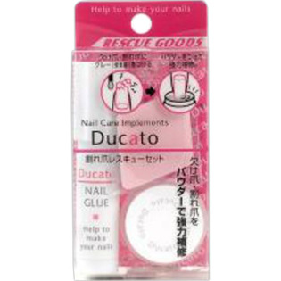

返回列表
产品名称：デュカート 割れ爪レスキューセット

シャンテイ デュカート 割れ爪レスキューセット ＿
メーカー シャンテイ
JANコード 4901604465126
商品の特徴
欠け爪・割れ爪をパウダーで強力補修
- 成分・分量
- ネイルグルー
種類：化学反応形接着剤
成分：シアノアクリレート(95％以上)
ＮＥＴ：2ｇ
ネイルパウダー
成分メタクリル酸エステル共重合物(100%）、ＮＥＴ2ｇ
爪やすり
材質：発泡ウレタン、洋紙、セラミック研磨剤
- 用法及び用量
- ・割れ爪を補修する。
1 アルミ袋を開封し、ネイルグルーとピンを取り出します。
2 ネイルグルーの先端を上に向け、指ではじいて中の液を落としてからピンで先端に穴をあけてください。
3 補修したい爪のマニキュアや汚れを拭き取ってください。
4 欠けた爪はかけらを合わせて、割れた爪は平らに直してからネイルグルーをたらしてください。
5 ネイルグルーをたらした後すぐにネイルパウダーをつけ、乾いてから余分なパウダーを払い落としてください。
6 再度、上からネイルグルーを１滴たらすと表面が透明になります。
7 ネイルグルーが完全に乾いてから、表面を付属の爪やすりのブルーの面で平らに整え、ピンクの面でなめらかに仕上げてください。
8 表面をよりなめらかにするにはベースコート（別売）をご使用ください。
9 ネイルグルー使用後は先端をペーパーなどでよく拭いてピンをさし、アルミ袋に入れたから容器に保存してください。
※さらに強度が必要な時は４～７のステップを繰り返してください。